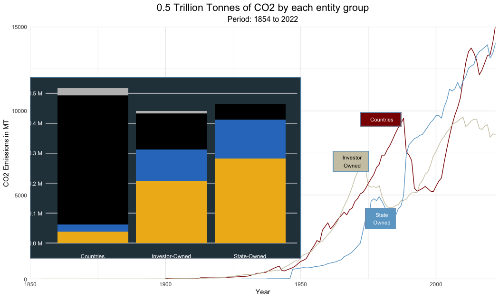

Loading Libraries
library(tidyverse)
library(jpeg)
library(grid)1.42 trillion tonnes of CO₂ from the world’s largest producers, by commodity and owner.
This particular visualization is done on R to visualize the data with custom back ground.
library(tidyverse)
library(jpeg)
library(grid)emissions <- readr::read_csv('https://raw.githubusercontent.com/rfordatascience/tidytuesday/master/data/2024/2024-05-21/emissions.csv')# Creating new columns for better visualization
emissions <-
emissions |>
mutate(
commodity_updated = case_when(
commodity %in% c("Oil & NGL") ~ "Oil",
commodity %in% c("Natural Gas") ~ "Gas",
commodity %in% c("Cement") ~ "Cement",
commodity %in% c("Sub-Bituminous Coal","Metallurgical Coal","Bituminous Coal",
"Thermal Coal", "Anthracite Coal","Lignite Coal" ) ~ "Coal"
),
parent_updated = case_when(
parent_type %in% c("Investor-owned Company") ~ "Investor-Owned",
parent_type %in% c("Nation State") ~ "Countries",
parent_type %in% c("State-owned Entity") ~ "State-Owned"
)
)
# Emissions Summary Data frame o by commodity and year
emissions_summary <-
emissions |>
group_by(year,commodity_updated) |>
summarise(co2_emissions = sum(total_emissions_MtCO2e),.groups = "drop")
# Emissions Summary Data frame o by year
emissions_summary_1 <-
emissions |>
group_by(year) |>
summarise(co2_emissions = sum(total_emissions_MtCO2e),.groups = "drop")
# Emissions Summary Data frame o on commodity
emissions_summary_2 <-
emissions |>
group_by(commodity_updated) |>
summarise(co2_emissions = sum(total_emissions_MtCO2e),.groups = "drop") |>
mutate(
perc = round((co2_emissions/ sum(co2_emissions))*100)
)
# Emissions Summary Data frame o on entity group and year
emissions_summary_3 <-
emissions |>
group_by(year,parent_updated) |>
summarise(co2_emissions = sum(total_emissions_MtCO2e),.groups = "drop")
# Emissions Summary Data frame on entity group
emissions_summary_4 <-
emissions |>
group_by(commodity_updated,parent_updated) |>
summarise(co2_emissions = sum(total_emissions_MtCO2e),.groups = "drop")# Plot1 - Area Chart with background image
# Pie Chart to annote inside Area Chart
emissions_summary_2 |>
arrange(desc(co2_emissions)) |>
ggplot(aes(x= "",y = perc , fill = commodity_updated)) +
geom_bar(stat = "identity",width = 1) +
geom_label(aes( x= 1.1, label = paste(perc,"%",sep = "")), position = position_stack(vjust = .5), color = "white") +
coord_polar("y", start = 2.1) +
scale_fill_manual(values = c("grey", "black", "#2e7ac5","#efb61b")) +
theme_void() +
theme(
legend.position = "none"
) -> pie_chart
goem_label_repel
bg_image <- readJPEG("background.jpg")
bg_image <- rasterGrob(bg_image, interpolate=TRUE)
ggplot() +
annotation_custom(
bg_image, xmin = 1850, xmax = 2022, ymin = 0, ymax = 40000
) +
geom_area(data = emissions_summary, aes(x=year, y=co2_emissions, fill=commodity_updated)) +
scale_fill_manual(values = c("grey", "black", "#2e7ac5","#efb61b")) +
geom_line(data = emissions_summary_1, aes(x=year, y=co2_emissions*1.01)) +
theme_minimal() +
coord_cartesian(xlim = c(1850,2022), ylim = c(0,40000), expand = FALSE) +
labs(
title = "122 Entities Contribute to 1.42 Trillion Tonnes of CO2 Emissions",
subtitle = "Period: 1854 to 2022",
caption = "Historical data from 122 entities that produces oil, gas , coal & cement ",
x = "Year",
y = "CO2 Emissions in MT"
) +
theme (
legend.position = c(0.05,0.9),
legend.background = element_rect(fill="#2a3f4a"),
plot.background = element_rect(fill="#2a3f4a"),
axis.title.x = element_text(colour = "white"),
axis.title.y = element_text(colour = "white"),
axis.text.x = element_text(colour = "white"),
axis.text.y = element_text(colour = "white"),
legend.text = element_text(colour = "white"),
legend.title = element_blank(),
plot.title = element_text(hjust = 0.5,colour = "white", size = 16),
plot.subtitle = element_text(hjust = 0.5,colour = "white", size = 12),
plot.caption = element_text(colour = "white")
) +
geom_vline(xintercept = 1945, color = "red", linetype = 2) +
geom_rect(
aes(xmin = 1942, xmax = 1948, ymin = 38000, ymax = 39000 ),
fill = "red4"
) +
annotate(
"text",
x = 1945,
y = 38500,
label = "1945",
size = 3,
color = "white"
) +
geom_vline(xintercept = 1993, color = "red", linetype = 2) +
geom_rect(
aes(xmin = 1989, xmax = 1996, ymin = 38000, ymax = 39000 ),
fill = "red4"
) +
annotate(
"text",
x = 1993,
y = 38500,
label = "1993",
size = 3,
color = "white"
) +
annotation_custom(
ggplotGrob(pie_chart) , xmin = 1850, xmax = 1900, ymax = 20000
) +
annotate(
"text",
x = 1915,
y = 35000,
label = "These Emissions contribute to 72% of Global Fossil Fuel \n Inflection years are observed at 1945 and 1993
suggesting respective phase of globalization",
color = "white",
size = 3
)
# Plot 2 Line Plot by Entities
# Stacked Bar Chart to annote inside line plot
emissions_summary_4 |>
ggplot(aes(x = parent_updated,y=co2_emissions, fill = commodity_updated)) +
geom_col(position="stack") +
scale_fill_manual(values = c("grey", "black", "#2e7ac5","#efb61b")) +
theme_minimal() +
labs(
x = "",
y = ""
) +
theme(
legend.position = "none",
axis.text.x = element_text(colour = "white"),
axis.text.y = element_text(colour = "white"),
panel.grid.minor.y = element_blank(),
panel.grid.major.x = element_blank()
) +
scale_y_continuous(labels = scales::unit_format(unit="M",scale=1e-6)) -> stacked_bar_chart
emissions_summary_3 |>
ggplot(aes(x = year,y =co2_emissions,color = parent_updated)) +
geom_line() +
scale_color_manual(values = c("red4", "cornsilk3", "skyblue3"))+
coord_cartesian(xlim = c(1850,2022), ylim = c(0,15000), expand = FALSE) +
theme_minimal() +
labs(
x = "Year",
y = "CO2 Emissions in MT",
title = "0.5 Trillion Tonnes of CO2 by each entity group",
subtitle = "Period: 1854 to 2022"
) +
theme(
legend.position = "none",
plot.title = element_text(hjust = 0.5, size = 16),
plot.subtitle = element_text(hjust = 0.5, size = 12)
) +
geom_rect(
aes(xmin = 1850, xmax = 1950, ymin = 1250, ymax = 12000 ),
fill = "#2a3f4a"
) +
annotation_custom(
ggplotGrob(stacked_bar_chart) , xmin = 1845, xmax = 1950, ymin =500, ymax = 12000
) +
geom_rect(
aes(xmin = 1972, xmax = 1987, ymin = 9100, ymax = 9900 ),
fill = "red4"
) +
annotate(
"text",
x = 1980,
y = 9500,
label = "Countries",
size = 3,
color = "white"
)+
geom_rect(
aes(xmin = 1962, xmax = 1975, ymin = 6400, ymax = 7600 ),
fill = "cornsilk3"
) +
annotate(
"text",
x = 1969,
y = 7000,
label = "Investor\nOwned",
size = 3,
color = "black"
)+
geom_rect(
aes(xmin = 1974, xmax = 1985, ymin = 3000, ymax = 4200 ),
fill = "skyblue3"
) +
annotate(
"text",
x = 1980,
y = 3600,
label = "State\nOwned",
size = 3,
color = "white"
)
One week down